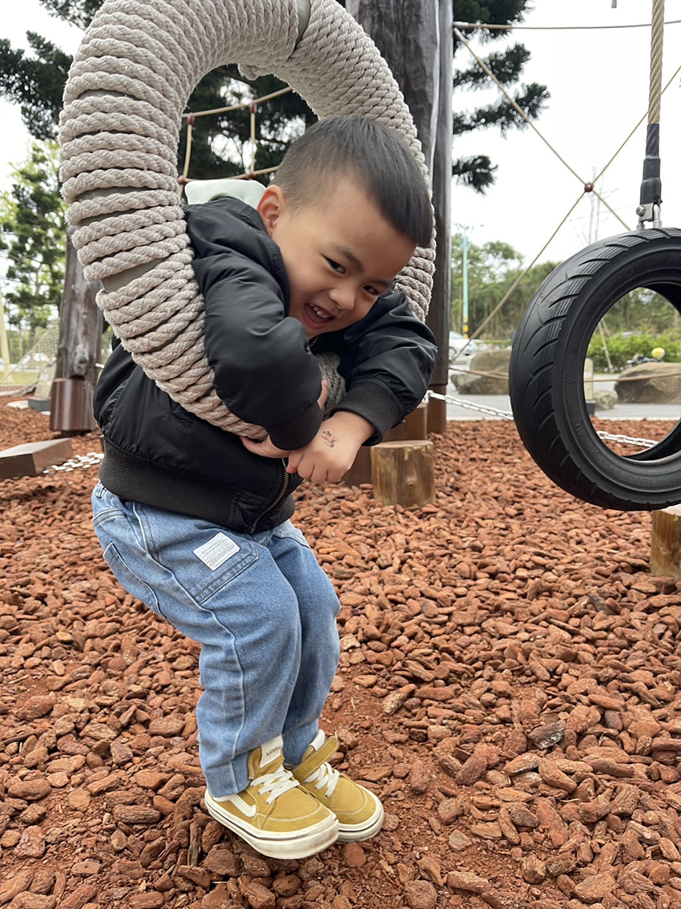

家裡附近有個新的兒童遊戲場，跟傳統兒童遊具不一樣，這個遊戲場沒有溜滑梯、盪鞦韆、搖搖馬，而是充滿木頭、鋼纜繩網、攀爬架等，地上是木屑、軟木與紅土，踩起來軟軟的又有點結實，跟傳統公園的軟橡膠地面觸感很不一樣。遊戲場在龍潭陸軍總司令部前面的空地，種植的南洋杉就像阿兵哥排隊一樣整整齊齊，高聳筆直，搭配上遊戲場的原木色系與遠方的大片草地，視覺上很舒服，沒有五顏六色的視覺衝擊，好像這區本來就是這種自然的顏色，遊戲場取名叫綠杉林公園，對比整區滿滿的大樹與草皮，名符其實。
孩子一到遊戲場就開心歡呼的直奔而去，先衝向用大根原木與纜繩網做成的攀爬網，整體高度大約110－130公分左右，5歲大的姐姐爬了兩根大木頭後，發現自己進退兩難，只好呼喊媽咪協助撤退。3歲的弟弟看見用繩索掛著的輪胎，悠閒自在的穿過輪胎中間掛著盪呀盪，像個人體盪鞦韆一樣，彷彿這個遊樂設施本來就這樣玩得一樣自在。再往前看到公園中最高的攀爬關卡，大梯形中間有根垂直滑桿，左右兩側都是斜坡可以往上爬，一般來說都是爬上去之後能有個溜滑梯咻的溜下來，這個設施則要從中間的滑桿垂直溜下去，就像消防員出任務一樣的溜～下去，兩小爬上去之後看著滑桿面面相覷，不知道從哪裡下手，弟弟想了想，決定原路爬下斜坡，最後三階沒踩穩屁股咚咚咚的溜下去，像是個另類溜滑梯。
姐姐爬了兩三次斜坡攻頂之後，看見其他的小朋友毫不猶豫就咻~的溜下去，決定勇敢挑戰一次滑桿。見她深吸一口氣，兩腳先夾住滑桿，接著雙手抓緊，滑下來前還不忘大喊說要大人在下面接著她，看她緊張的小表情奮力一溜，快速的降落，頭髮都飛了起來，好像剛剛是從10層樓往下跳，降落的腳步有點踉蹌，雖然成功但是驚魂未定，哇的一聲先哭5秒，拍拍她的背，再給一個大大的擁抱，恭喜姐姐挑戰成功。
接著繼續挑戰旁邊的擺盪繩索，抓著繩索從左擺盪到右，正常來說，應該要能從左邊盪到右邊的平台而不掉下去，不過這裡是遊戲場不是軍營，要是中間是水溝，大概小孩們已經全數變成落湯雞了吧，擺盪區小小兩根繩索前後玩了不下10次，盪過來盪過去，像是樹林中間的小猴子一樣，想必已有充分的消耗體力，兩小都玩得臉蛋紅撲撲。
整個遊戲場玩上一圈，好像幼兒版500障礙，有搖晃的木頭橋、擺盪的繩索還有單槓與攀爬牆，整體來說適合10歲以上的大孩子，小小孩的話，還是帶上玩沙玩具到一旁的沙坑比較有樂趣一些，不過小孩永遠喜歡挑戰大人說不適合他的東西，嘗試過才能成長，挑戰過才知道極限在哪裡。遊戲場玩一圈回家，飯量也比往常多了一些，繼續玩樂繼續成長囉。
|  |